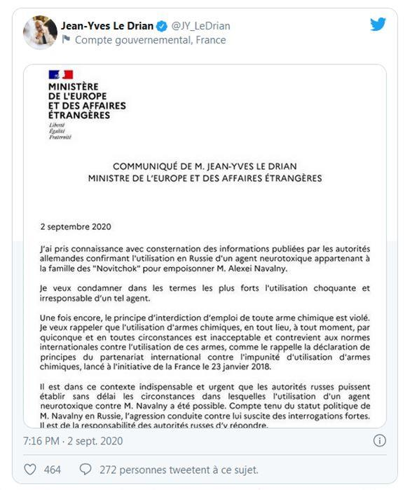
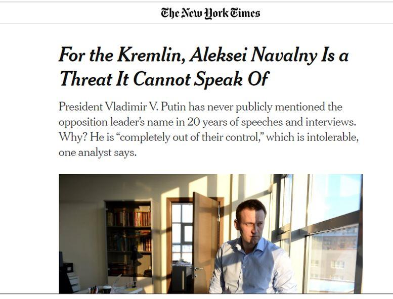
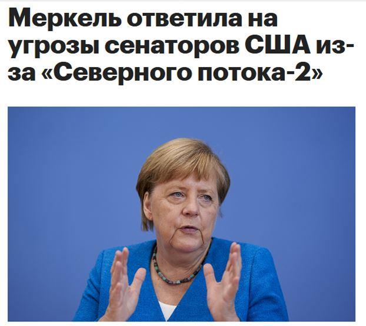

Ca y est, l’opération Navalny tourne à plein régime. Merkel l’a déclaré : la Russie a empoisonné Navalny au novichok, il n’y a aucun doute. Et comme c’est la Russie, elle doit reconnaître les faits. Et comme il n’y a aucun doute, il n’est pas nécessaire de présenter les preuves. Quant à savoir pourquoi un produit si toxique et volatil a réussi à ne toucher absolument personne dans l’entourage de Navalny, ni dans l’avion, ni dans l’hôpital à Omsk, cela doit faire partie des mystères de la géopolitique. En attendant, la communauté internationale prépare sa « réponse », autrement dit continue son attaque contre la Russie.
Un laboratoire militaire allemand a enfin déclaré ce que les politiciens allemands affirmaient déjà la semaine dernière : Navalny a été empoisonné au Novichok. Immédiatement, Merkel donne le ton, l’opération est lancée et frappe directement le Gouvernement russe.
Alors, le « monde libre » entre dans la danse, une bonne vieille petite guéguerre froide pour faire oublier la débâcle serait bienvenue, même si une véritable guerre froide fait peur. Des deux côtés. Aucun n’est réellement prêt à cela. La posture sera suffisante et la mécanique des sanctions, bien rodée, fera l’affaire.
« Après1 les États-Unis et le Royaume-Uni, c’est la France qui, par l’intermédiaire du ministre des Affaires étrangères Jean-Yves Le Drian, a dénoncé « l’utilisation choquante et irresponsable » de cette substance. »
La déclaration de Le Drian montre à quel point la mécanique est toujours la même : la Russie doit montrer dans quelles circonstances le produit a été utilisé. Autrement dit, on vous affirme qu’il y a du novichok, sans présenter aucun document aux autorités officielles russes, et maintenant c’est à la Russie de fournir l’explication de ce scénario fantasmagorique.
C’est exactement comme avec l’affaire du dopage : on vous assure qu’il y a eu implication du FSB qui faisait soi-disant passer à travers les murs les échantillons, maintenant vous devez reconnaître cette absurdité pour, peut-être, que l’on vous pardonne. L’expérience a montré que rien n’est jamais « pardonné », la mécanique ne fait que progresser. Chaque conciliation est interprétée comme une faiblesse et donc une raison pour faire monter graduellement la pression.
Ici nous avons droit à un laboratoire militaire, sans qu’aucune analyse alternative indépendante ne soit ni envisagée, ni même exigée. C’est vrai, c’est un laboratoire militaire … mais allemand, ça change tout.
Sur cette base, un chef d’État accuse officiellement un Gouvernement d’empoisonnement d’un de ses citoyens. Sans lui fournir aucun élément de preuve. Et l’enjoint à collaborer à l’enquête – qui l’a déjà déclaré coupable. Alors qu’une enquête est bien ouverte en Russie par le Comité d’enquête. Qui elle, à la différence de « l’enquête » menée en Allemagne, doit être « ouverte », donc en violation du principe universel de secret de l’enquête.
Rien ne vous dérange ?
On ne rappellera pas que Navalny 2 n’est « le principal opposant » de Poutine que dans la fantasmagorie occidentale.
On ne reviendra même pas sur l’absurdité fondamentale de cette version. Si la Russie avait empoisonné Navalny, à quoi bon l’offrir à l’Allemagne pour que l’enchaînement des accusations-sanctions, tant prévisibles, ait lieu ?
Il est vrai que le fait même que la Russie l’ait laissé se faire exfiltrer, sans avoir prévu de parade, soulève des questions …
On ne reviendra pas non plus sur cet étrange « novichok », substance extrêmement dangereuse, qui semble avoir beaucoup de mal à tuer … Certains, comme la fille Skripal, en ressortent même avec une cure de jeunesse.
On oubliera aussi de se demander comment est-il possible que personne parmi les centaines de voyageurs, parmi les médecins, parmi les proches qui furent en contact avec Navalny, dans des espaces clos, absolument personne n’ait le moindre symptôme, qu’il n’y ait pas eu d’hécatombe est un véritable miracle … si c’est bien du novichok. À moins qu’il ne soit périmé … En tout cas, c’est la question que se pose l’un des créateurs 3 du novichok, en raison de la volatilité du produit à partir de +20°.
Pourquoi se poser tant de questions, c’est la Russie. Pourquoi faire un effort, le novichok est bien suffisant, il faut juste un prétexte. Le voici. L’OTAN n’aura finalement pas sa base en Biélorussie, ça a un prix. Et peu importe que la Russie ait parfaitement joué le rôle du Covid, qu’elle entre dans l’organisation internationale pour les migrations 4, qu’elle suive les recommandations du FMI5, peu importe qu’elle ait docilement collaboré pour le scandale parfaitement organisé des JO, peu importe qu’elle suive le culte managerial qui tue toute dynamique dans les domaines où il s’implante, peu importe qu’elle suive les recommandations de l’OCDE (sans en être membre) conduisant à la destruction de l’enseignement et de la recherche, etc. etc. etc. Peu importe, finalement, qu’elle ait laissé exfiltrer Navalny. Et à cause de cela. Il y aura des sanctions. Il y aura une diabolisation. Il y a une communication de guerre. Car chaque concession est un signe de faiblesse.
Sauf à tomber dans la propagande primaire, il est difficile de ne pas voir que la stratégie mise en œuvre par les groupes néolibéraux, devenus dominants dans la politique russe, fragilisent le pays et ouvrent la voie à des attaques de plus en plus frontales. Mais ce ne sont pas eux qui sont aptes à mener le combat.
PS: Malgré la demande d’un sénateur 6 américain et de l’opposition verte en Allemagne d’interrompre la construction du gazoduc Nord Stream 2 en réaction à l’empoisonnement de Navalny, Merkel 7 a déclaré qu’il serait construit jusqu’au bout. En soi, c’est une bonne nouvelle, mais ça ne peut conditionner la politique étrangère russe. La diplomatie du gaz et du pétrole a déjà démontré son échec en Ukraine.
Partager cette page